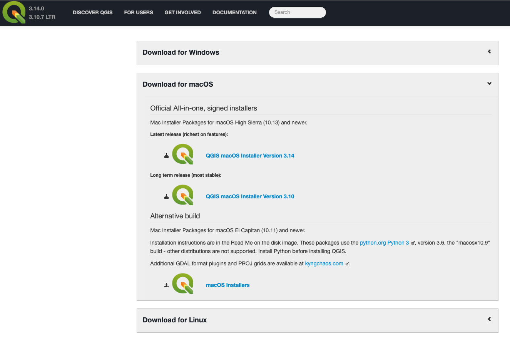
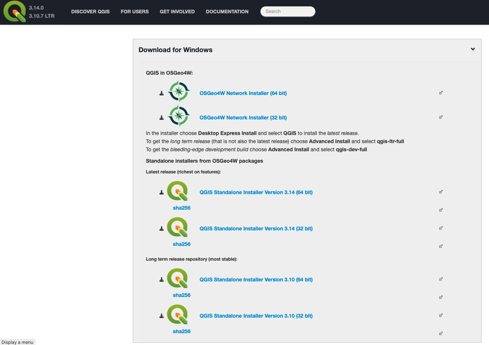

    <textarea id="source">

class: center, middle

## Pre  QGIS  Workshop Assignment
### DSPG Summer Program
### June 23, 2020

##### Questions? email Professor Seeger cjseeger@iastate.edu


_Use arrow keys to move forward/backwards through slide show._

---

In preperation for the QGIS workshop on Thursday, please complete the following by 6:00 PM CDT Wednesday. 
It should only take about 5 minutes.

1. Draw boundary map of the 'Midwest' region.
2. Fill out States most interested in visiting form.
3. Draw route of a summer roadtrip and save file.

Instructions for completing these items are on the following slides.

---

Draw boundary of the 'Midwest' using <a href="https://geojson.io" target="_blank">Geojson.io</a>. Login with your GitHub account. Draw a polygon around the region that you consider to be the Midwest region of the US. _Double click to end/close the polygon._ Once drawn, double click the shape to add an attribute for 'school' and enter your school as ISU, OSU, UVA, VSU or VT. Copy all of the GeoJSON text in the right pane.

<video preload="auto" width="100%" height="auto"  data-setup="{}" controls><source src="prep/midwest.mp4" type="video/mp4" /></video>

Open this <a href="https://forms.gle/1neFsvZTXTa8wDJk6" target="_blank">survey form</a>, complete and then proceed to the next slide.

---

Fill out survey of the state you are most interested in visiting. Then copy the geojson code you created and paste into the survey.
The last step is to create a new GeoJSON map of a summer roadtrip. Open up a new <a href="https://geojson.io" target="_blank">Geojson.io</a> map, or select new if you already have it open. Folow the steps below to create and save your route.

<video preload="auto" width="100%" height="auto"  data-setup="{}" controls><source src="prep/roadtrip.mp4" type="video/mp4" /></video>

If you want to read more about maps of the Midwest region see the last slide.

---

###Optional Local QGIS Install
In case Rivanna decides to not work, you can download and install QGIS on your Windows or Mac machine - yes QGIS supports Mac natively whereas ESRI ArcGIS Desktop/Pro does not.

To install go to <a href="https://qgis.org" target="_blank">https://qgis.org</a>. Current version is 3.14, but the Long term release which is the most stable is 3.10.x and this is what we want. 

1. Click the green Download Now button
2. Depending on your OS platform, the option for Windows or macOS will display.
3. Windows users, select the standalone installer Version 3.10 (64 bit) or if you have to use the 32 bit. So the last two options
4. Mac users select the second item for Version 3.10 if your OS is 10.13 or higher. If not, go to the alternative builds for OS version 10.11 / 10.12
5. QGIS is open-source software and is actively developed with minor updates every 30-40 days


---
Windows install options



---
Mac install options



---
Interesting articles about the Midwest Region Boundary

1. <a href="https://www.bloomberg.com/news/articles/2019-08-29/where-is-the-midwest-here-s-what-you-told-us" target="_blank">City Lab: We Mapped ‘the Midwest’ for You, So Stop Arguing</a><br>
2. <a href="https://fivethirtyeight.com/features/what-states-are-in-the-midwest/" target="_blank"> FiveThirtyEight: Which States Are in the Midwest?</a><br>
3. <a href="https://www.startribune.com/is-minnesota-part-of-the-midwest-should-it-be/561250971/?refresh=true" target="_blank">Star Tribune: Should Minnesota be considered part of the Midwest? </a>


    
    
    

    </textarea>
